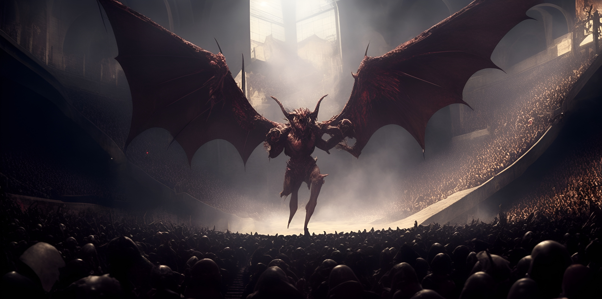

Chapter 5: Gladiators
The Blooming of Macksohn

The Blooming of Macksohn
15048.11.14
一大清早，在 White Brick 醒來的 Ron 和 Samael 發現夥伴們沒有回到房內，雖然充滿疑惑，但也不知道該往哪去，只好先行前往王宮花園的入口，看看能否在比武大會相遇了。
Patton’s 內的四人，在經過考慮後，決定由 YHWH 留下來陪伴昏迷的 Midori 和背部持續灼傷的 Anedak，由 Paladin 自行前往比武大會。
來到王宮花園的入口，已有一些人聚集在此。Ron、Samael 和 Paladin 會合後，了解了其他夥伴在離開地下城後的現況。同時，一名被稱為 Siri，形跡可疑的地精到處繞來繞去打探消息。
不久後，一名王宮的人員前來將花園門口打開，邀請參賽者們一同邁向比賽場地。走入花園深處，打開一扇厚重的金屬雙開門，裡面只有微微火光。東拐西繞，在逐漸失去方向感後，冒險者們走到了一個小房間。王宮人員向大家說明比賽的簡單規則，並給了每個人一個小布袋，裡面有兩把匕首與兩管普通的治療藥水。大家靜靜坐在小房間內，等候自己的名字被呼喚。
在 Patton’s 內，YHWH 似乎感受到了自己胸口從昨晚開始，便有一股異樣的壓迫感，卻始終找不出這感覺的來源。同時，昏迷的 Midori 似乎發現了自己突然有了能用心靈溝通的能力，便試著與他的夥伴們溝通。
不久後，幾名衛兵闖了進來，要帶三位到比武大會的現場去當觀眾。眼看隨行的衛兵人數眾多，冒險者們也打消了反抗的念頭，乖乖地跟著衛兵一起前行（或是被用擔架架著）。到了王宮花園的入口後，他們被矇上了眼，在無法感知附近環境的情況下前行。
來到了比武大會現場，經過麥克嵩現任國王巴納沃二世的開講後，比賽便正式開始。本次參與比賽的人數大約有三十人上下，以單淘汰賽的形式，進行數輪的單淘汰賽，最終會將產出唯一的一名冠軍。
經過了數輪對戰，有的旗鼓相當，有的輕而易舉，最終，踏入總冠軍賽的，是 Paladin 與 Ron 兩人。
在總決賽，Ron 大力出擊，不過比起拿下總冠軍，他心中想的是要激發出 Paladin 的鬥志，讓 Paladin 靠著自己的力量拿下總冠軍。而求勝若渴的 Paladin 也努力想勝過 Ron。在 Ron 強大的攻勢下，眼看 Paladin 就要接近昏迷，Ron 迅速的向後飛了出去，以高超的演技，讓現場全員都以為他已昏去。然而，同時 Paladin 也應聲倒地，閉上自己的雙眼。
現場工作人員將昏迷的兩人搬到了國王的包廂前。正當國王躊躇著該怎麼辦時，醫護人員發現 Paladin 還清醒著，於是國王便正式宣告「膝蓋粉碎者帕拉丁」為本次比武大會的總冠軍。
在國王巴納沃二世身邊，帕拉丁提出了幾項他的要求：呼喚 Michael 和 Cena 來到包廂、即刻釋放 Jiaheng、讓冒險夥伴們在麥克嵩有舒適的地方居住，以及一張麥克嵩周圍城鎮的地圖。國王逐一承諾，同時，久未現身的 Jiaheng 被衛兵們從包廂後方架了出來。雖然神情有點恍惚，但看起來沒有太嚴重的傷勢。Michael 來到包廂時，便喚醒了 Ron，兩人和 Jiaheng 一起離開了包廂，回到觀眾席。Cena 來到了包廂，Paladin 早向前去，思索了一下，便拍拍他的膝蓋，祝福他好運，Cena 也就離去了。
接著，國王宣布，封 Paladin 為新任的寇林菲爾德爵士，Paladin 爵士。雖然 Paladin 表示自己還會繼續去冒險，但國王表示只要一年回去個幾天，讓人民記得他，就可以了，於是 Paladin 也就接下了這個爵位。
接著，Paladin 和國王問起了從 Frankie 口中聽見的陌生地名，Sebano。正當國王要開口說明時，Paladin 聽見了從國王背後傳出的緩慢掌聲。兩名衛兵伴隨著一個熟悉的人走了出來。那人是前一天才被台北市議員棄屍於地下道的熟悉面孔，Frankie。雖然右臂因為被 Anedak 揮砍而下垂，但他活生生得出現在 Paladin 面前，還是讓他大吃一驚。Frankie 將他的手搭在動彈不得的國王肩上，Paladin 機警地拿起武器。國王大喊救命，身後前來幫忙的 Scar-Face 卻在 Frankie 一揮下直接倒地不起。然而，周圍傳出了人民哭喊的聲音，以及武器碰撞聲。Paladin 亦回頭，觀眾席的衛兵早已朝人民們開始攻擊。那些原本表情嚴肅的衛兵，竟露出了邪惡的表情。
觀眾席上的台北市議員們保護著昏迷的 Midori，同時也努力將周圍的衛兵打死；Paladin 則試圖保護紫羅蘭，但他也看見 Frankie 將國王的精力吸乾，化身為一隻惡魔，朝台北市議員們飛去，留下多位衛兵，逐漸包圍 Paladin。
回到麥克嵩的 Lemmy，在衛兵的引導下，進入了比武大會的現場，沒想到一眨眼，整個比武大會便陷入了戰鬥之中。Lemmy 看見了幾個月不見的台北市議員夥伴們，在協助將附近幾位衛兵擊倒後，他便朝著稍早看見包廂內的 Paladin 的方向前進，試著去營救他。然而，他突然看見一個和他長得一模一樣的人，出現在他眼前。化身為 Lemmy 的 Sha’Doom 將 Lemmy 擋住，兩人互相叫囂。
隨著化為惡魔的 Frankie 越飛越近，台北市議員們終於將身邊的衛兵一一擊斃，專心面對 Frankie。在幾波強力的心靈攻勢下，台北市議員們的狀況逐漸惡化，連要逃跑都不容易。最終，在大家合力圍攻下，Frankie 透過心靈，傳給冒險者們一句「I’ll be back.」後便消失了。看見大事不妙的衛兵們也紛紛逃竄。
隨著衛兵們逃離現場，冒險者們集合在了一起，看著久別重逢的 Jiaheng 和彷彿變了一個人的 Lemmy，以及這次戰鬥中一同並肩作戰的 Siri，大家總算能暫時休息一下。同時，仍未放下警戒的 Paladin 看見遠方包廂內被吸乾精力的巴納沃二世，竟然豎起了身子，彷彿精神飽滿的站了起來，環顧四周後，從包廂後方的簾子後逃離。
冒險者們在競技場穿梭，除了搜刮各式財寶與武器外，也對狀況不穩定的民眾搶救，並尋找自己認識的人們，確認他們的狀況：Scar-Face 和 Michael 確定死透了；Dr. David、Gregory The Axe 和 Flaerry 夫婦都陷入昏迷；Franz 狀況良好，不過對於 Frankie 的襲擊似乎有不少話想和 Samael 討論；Roline 飽受驚嚇，在 Ron 的陪伴與安撫下情緒穩定了許多；而 Mr. Moon 雖然清醒，但是身上受了不少傷。在大家的協助下，Flaerry 先生被搬到了大家休息的角落，但 Flaerry 夫人沒這麼幸運，在意外下，Paladin 不小心將他摔到了競技場內，而在 Midori 的檢查下，發現他可能從此再也站不起來了。
同一時間，協助冒險者們的 Siri 也跟著大家，並和 Ron 簡單地互相認識，並說明自己希望加入台北市議員，來幫忙洗刷他們的冤屈。
花了不少時間後，冒險者們決定將甦醒的夥伴們帶回地面，Midori 也將 Flaerry 夫人置於他召喚出的小馬背上，一同離開。走了不久便回到了地面，這裡是王宮花園內部。經過短暫討論後，大家決定前往 Patton’s。
Paladin 和紫羅蘭討論著他的未來，究竟要回到王宮，還是該去哪裡？紫羅蘭認為麥克嵩發生了這些事，王宮大概也會陷入極大混亂，回去十分危險。在 Paladin 的建議下，決定送紫羅蘭到寇林菲爾德修養，也能和 Magnus 爵士再次見面。
回到 Patton’s 後，Midori 和 Siri 兩人決定再次回到競技場，協助穩定傷患。看見 Midori 的善心，Siri 也和他說明了自己的來意，以及簡單的自我介紹。在競技場，兩人看見稍早還在昏迷中的 Dr. David 已經甦醒了，且正在檢查傷患中，兩人便一起加入幫忙，幾個小時後才出發回 Patton’s。
同時，Jiaheng 利用魔法，製作了一些食物，供大家食用。剛脫離險境的 Anedak 想趁火打劫，在 Jiaheng 與 Lemmy 的陪伴下，三人一起離開 Patton’s，討論著應該要去哪裡。武器舖？雜貨店？或是民宅？最後，三人決定走上 Berners 山丘，到 Berners 宅邸猛闖一番。
Lemmy 輕鬆地打開了 Berners 宅邸的大門，三人一同走入亮晃晃的長廊中。一扇門、兩扇門，三人一步一步走入深處，然後看見了坐在大廳遠方的三個人：坐在中間的灰鬍子老年男人、右手邊的年長女子，以及左手邊的少年。Anedak 試圖向他們叫囂，然而，隨著老年男人嘴角露出一抹邪笑，三人便陷入了昏迷。
回到 Patton’s 的 Midori 和 Siri 發現 Anedak、Jiaheng 和 Lemmy 三人不在現場，其他人也表示他們稍早想去附近繞繞，卻始終沒有回音。透過感知能力，Midori 沒能找到他們，但感受到他們似乎被什麼鉛製的東西給格擋住了，卻也無法判別方位。疲憊的大家只好先入睡，等隔日早上再看看三人是否安全回來。
不知過了多久，Lemmy 在昏暗的書房內甦醒了。他發現同行的三人口部被布遮蓋，手腳都被繩索捆緊，掙脫不開。在簡單確認後，他感覺身邊兩個夥伴不太對勁，似乎都沒有了生命跡象。Lemmy 扭動著身子，往書房的椅子挪去，想靠各種方法將繩索切斷，卻在同時聽見了門外傳來了步伐聲，便以最快的速度將自己挪回原位，閉上雙眼。
Lemmy 聽見了開門聲，感受到一個身影在三人身後從高處俯瞰……